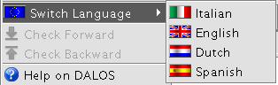

Switch Global Language
To select the main language go to Switch Language in the DALOS Menu

Select one of the four supported DALOS languages
This will load the lexicon in the selected language in the Terms panel
The selected language will be saved in the application preferences and loaded as default at following startups